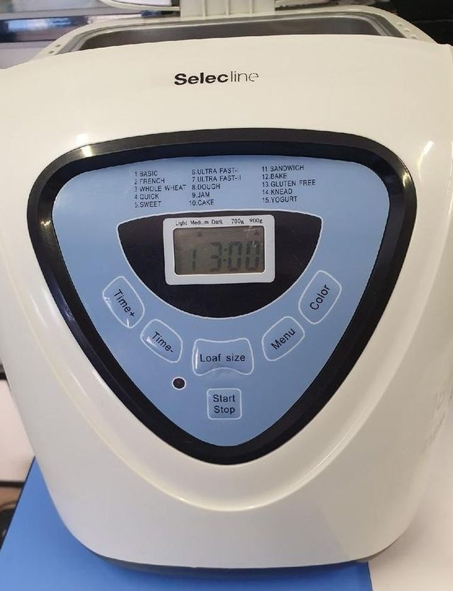
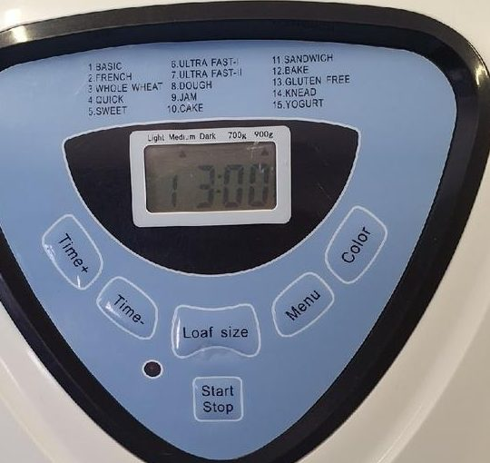
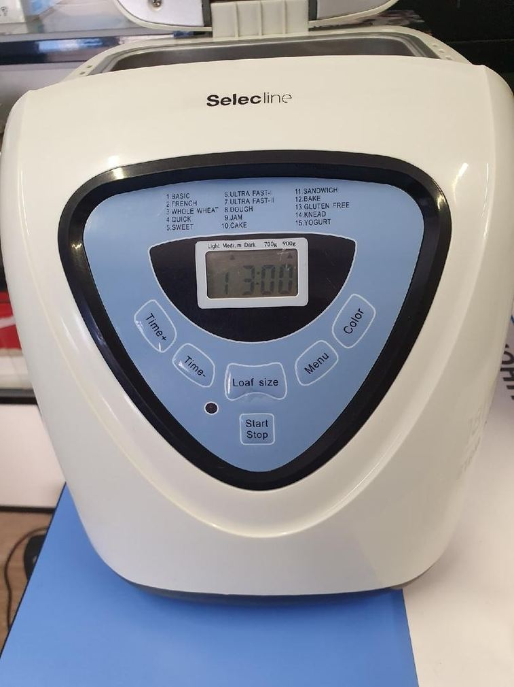
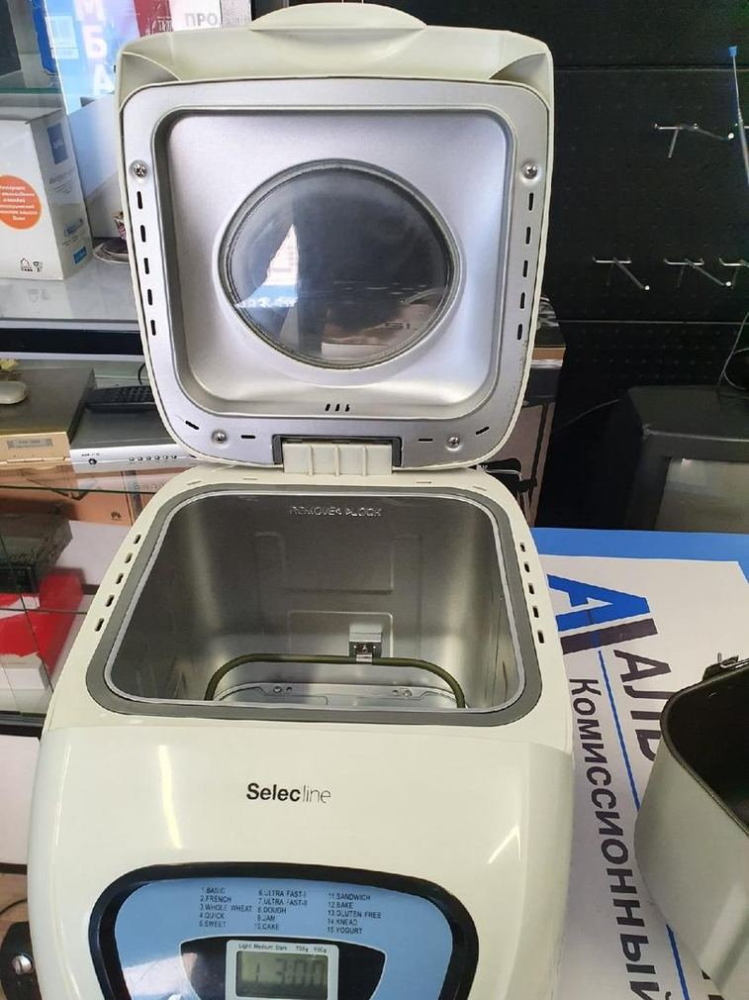
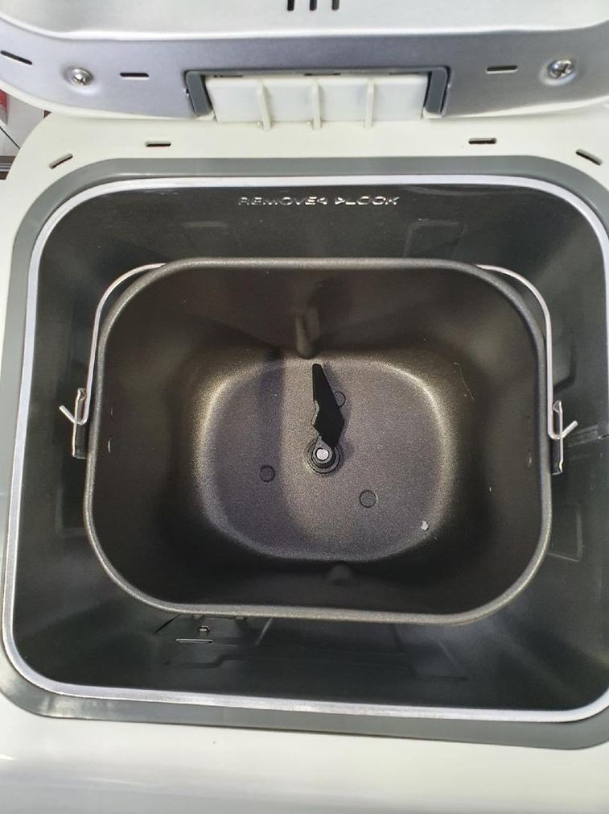
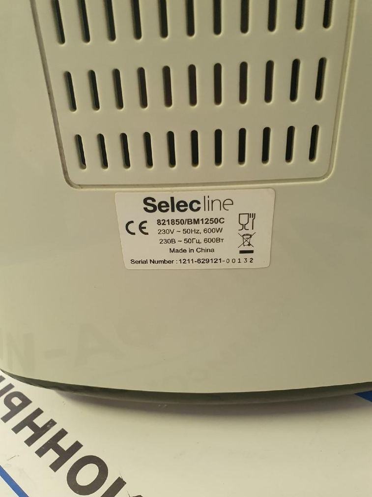

Selecline · собственная марка сети Ашан (Auchan)
Хлебопечка Selecline BM1250C: инструкция, 15 программ и рецепты
Испечь первый хлеб Открыть инструкцию
- 15программ
- 500 г → 275 млмука и вода
- 700 и 900 гдве буханки

Быстрый старт
Белый хлеб с первого раза
Программа 1 BASIC (основной) · буханка 900 г · корочка Medium — средняя · на дисплее 3:00
1 Что положить
- 275 мл
- Тёплая вода, 20–25 °C
- 1 ст. л.
- Растительное или оливковое масло ≈ 15 мл
- 1,5 ч. л.
- Соль = ½ ст. л.
- 1 ст. л.
- Сахар = 3 ч. л.
- 500 г
- Пшеничная хлебная мука
- 7 г
- Сухие быстродействующие дрожжи 1 пакетик = 2¼ ч. л.
В том же порядке, сверху вниз: дрожжи не должны касаться воды и соли.
2 Что выбрать на печке
- MENUменю
- 1 BASIC основной
- LOAF SIZEразмер буханки
- 900 г (2.0 lb)
- COLOURцвет корочки
- Medium — средняя
- STARTпуск
- на дисплее 3:00
Если на дисплее другое время — выбрана не та программа. Проверять удобнее всего именно по нему.
3 Что проверить через 10–15 минут
Самая частая ошибка — лишняя вода. Доливайте и досыпайте по одной ложке, а не по 30–50 мл: тесто легко перескакивает в противоположную крайность. Подробно — про колобок.
Порядок закладки продуктов
Порядок один для всех дрожжевых рецептов, и нарушать его нельзя: дрожжи не должны раньше времени встретиться с водой и солью. Особенно это критично при отложенном старте, когда закладка стоит в ведёрке несколько часов.
Сначала — лопатка. Насадите её на вал ведёрка. Без лопатки печка отработает всю программу впустую.
- 1 Вода20–25 °C
- 2 Масло, соль, сахарповерх воды
- 3 Муказакрывает всю жидкость
- 4 Ямка в мукене доставая до воды
- 5 Дрожжисухие, в ямку
Рецепты под программы этой печки
Всё пересчитано в граммы и миллилитры — без английских чашек и фунтов. Справа от каждого рецепта стоит его главное соотношение: мука и вода.
- Белый хлеб — базовый рецепт 1 BASIC · основной · 3:00 · 900 г 500 г / 275 мл
- Французский хлеб 2 FRENCH · французский · 3:50 · 900 г 480 г / 310 мл
- Цельнозерновой хлеб 3 WHOLE WHEAT · цельнозерновой · 3:40 · 900 г 475 г / 250 мл
- Сладкий хлеб с сухофруктами 5 SWEET · сладкий · 2:50 · 700 г 445 г / 280 мл
- Сэндвичный хлеб 11 SANDWICH · сэндвичный · 2:55 · 700 г 450 г / 260 мл
- Ароматный хлеб с чесноком и травами 1 BASIC · основной · 3:00 · 900 г 500 г / 275 мл
- Белый хлеб — влажный вариант (500 / 330) 1 BASIC · основной · 3:00 · 900 г 500 г / 330 мл
Все рецепты со сводной таблицей закладок
Панель управления
Шесть кнопок и дисплей. Программа выбирается кнопкой MENU по кругу, а проверить, что выбрана нужная, проще всего по времени на дисплее.

- MENUменю
- перебор программ 1 → 15
- LOAF SIZEразмер буханки
- вес буханки: 700 г (1.5 lb) или 900 г (2.0 lb)
- COLOURцвет корочки
- цвет корочки: Light — светлая, Medium — средняя, Dark — тёмная
- TIME + / TIME −время
- отложенный старт, шаг 10 минут
- START / STOPпуск / стоп
- запуск; для отмены удерживать ~3 секунды
Полная инструкция: закладка, отложенный старт, ошибки, уход
Как выглядит эта печка
Марку Selecline сеть ставила на разную технику, поэтому сначала стоит убедиться, что печка та самая. Главная примета — панель с напечатанным списком ровно из 15 программ и шестью кнопками.




Все восемь фотографий и таблица характеристик
Откуда взялась инструкция
Selecline BM1250C — это OEM-печка: тот же аппарат продавался под несколькими марками. У модели
Judge JEA43 совпадает всё: кнопки, размеры буханки и вся последовательность 15 программ
вплоть до редких 13 Gluten Free, 14 Knead, 15 Yogurt. Для Judge сохранилась
полноценная инструкция с книгой рецептов на 25 страниц — она и стала основой этого сайта.
Эта инструкция выложена здесь целиком: оригинальный английский PDF и полный перевод на русский — руководство и все 14 фирменных рецептов, включая пиццу, мармелад и йогурт.
Позже нашёлся и второй близнец — Maxwell MW-3751 W, продававшийся в России. У него совпадает не только список программ, но и время каждой из пятнадцати вплоть до минуты, а инструкция сразу на русском.
Читать перевод инструкции Как нашли аналог
Это хлебопечка из Ашана
Selecline — не завод, а собственная торговая марка сети Ашан (Auchan). Технику под этим именем сеть заказывала у сторонних производителей, поэтому официальной поддержки и документации у марки нет, зато почти у каждой модели есть «близнец» под другим брендом — с нормальной инструкцией.
Эту же печку ищут по разным написаниям: Selecline BM1250-C, Selecline BM 1250 C, Selecline BM1250, хлебопечка Ашан BM1250C, хлебопечка Auchan Selecline BM1250C, Selecline bread maker BM1250C. Речь везде об одном и том же аппарате.
Кроме BM1250C в Ашане продавалась более простая модель на 12 программ — Selecline 861382 / BM1333. Рабочая закладка у них разная, поэтому сначала стоит определить свою модель.
Частые вопросы
Сколько воды на 500 г муки в этой хлебопечке?
По книге рецептов родной для BM1250C платформы — 275 мл на 500 г пшеничной хлебной муки, программа 1 BASIC, размер 2.0 lb (900 г). Популярный в интернете вариант 330 мл рассчитан на другую печку и для BM1250C оказывается заметно влажным.
7 г дрожжей — это сколько ложек?
7 г сухих быстродействующих дрожжей — это 2¼ чайной ложки или примерно ¾ столовой. Проще всего брать один магазинный пакетик 7 г. Подробнее — в таблице мер.
Почему в углах ведёрка остаётся сухая мука?
Почти всегда дело в соотношении воды и муки: тесто слишком тугое, и лопатке не хватает силы протащить его по углам. Добавляйте воду по одной столовой ложке на 10–15-й минуте замеса. Разбор с картинками — на странице о колобке.
Сколько идёт программа 1 BASIC?
Ровно 3 часа. На дисплее после выбора программы и размера появляется 3:00. Время всех остальных режимов — в таблице 15 программ.
Что означают 1.5 lb (700 г) и 2.0 lb (900 г) на дисплее?
Это вес буханки в фунтах: 1.5 lb (700 г) ≈ 680 г, 2.0 lb (900 г) ≈ 900 г. Для закладки на 500 г муки нужен размер 2.0 lb (900 г).
Когда добавлять семечки и сухофрукты?
По звуковому сигналу примерно в середине замеса — печка подаёт серию коротких сигналов. Если положить сразу, лопатка разотрёт добавки в кашу. Сухие молотые специи, наоборот, кладут сразу в муку. Подробнее — о специях и добавках.
Selecline — это чья марка? Кто производитель?
Selecline — собственная торговая марка сети Ашан (Auchan), а не завод. Технику под ней выпускали сторонние производители по заказу сети. Поэтому у модели нет официальной поддержки, но есть «близнецы» под другими брендами — подробнее про хлебопечки Ашан.
Где взять инструкцию к Selecline BM1250C?
Официальной инструкции с нормами закладки к этой модели в открытом доступе нет — в комплектной документации был только порядок добавления продуктов. Практическая замена — инструкция и книга рецептов Judge JEA43: у этой печки полностью совпадают панель, кнопки, размеры буханки и все 15 программ. Она выложена здесь — оригинальный английский PDF и полный перевод на русский.
Можно ли ставить хлеб на отложенный старт?
Да, кнопками TIME + и TIME −, шагом по 10 минут. Но только для рецептов на воде и растительном масле. Яйца, молоко, сметана, сливочное масло, сыр и свежий лук за несколько часов в тёплой печке испортятся.